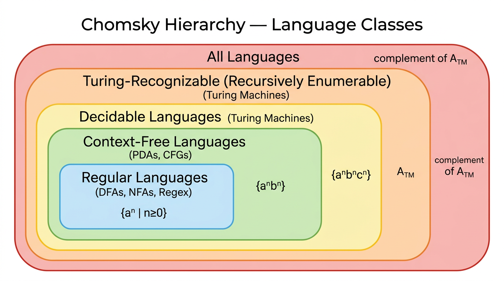

Decidability & Undecidability — COMP0003 Automata¶
Lecture-style notes. Decidability asks whether a TM can always give a definitive YES or NO answer. Some problems — most famously \(A_{\text{TM}}\) and the halting problem — are undecidable: no algorithm can solve them for all inputs. The proof technique is diagonalisation, and reductions extend undecidability from one problem to another.
1. COMPLETE TOPIC SUMMARIES¶
Recognition vs decidability¶
| Concept | Definition | Guarantee |
|---|---|---|
| Turing-recognisable (r.e.) | TM accepts every \(w \in L\) in finite time | Guaranteed YES for members; may loop on non-members |
| Decidable (recursive) | TM accepts every \(w \in L\) and rejects every \(w \notin L\) in finite time | Guaranteed YES or NO for every input |
| Co-Turing-recognisable | The complement \(\overline{L}\) is Turing-recognisable | Guaranteed NO for non-members; may loop on members |
A TM that always halts (on every input) is called a decider. If a language has a decider, it is decidable.
Key relationship:
Proof idea: If \(L\) is both recognisable (by \(M_1\)) and co-recognisable (by \(M_2\)), run \(M_1\) and \(M_2\) in parallel on input \(w\). One of them must accept (since \(w \in L\) or \(w \in \overline{L}\)). If \(M_1\) accepts, accept; if \(M_2\) accepts, reject. This always halts.
The language hierarchy¶

{kind=link}
- Every regular language is decidable (DFAs always halt).
- Every CFL is decidable (there are algorithms to decide CFG membership — see Chomsky Normal Form below).
- There exist decidable languages that are not context-free (e.g. \(\{a^n b^n c^n\}\)).
- There exist Turing-recognisable languages that are not decidable (e.g. \(A_{\text{TM}}\)).
- There exist languages that are not even Turing-recognisable (e.g. \(\overline{A_{\text{TM}}}\)).
Decidable problems about DFAs¶
\(A_{\text{DFA}}\) — DFA acceptance. Given a DFA \(B\) and a string \(w\), does \(B\) accept \(w\)?
Decidable. Simulate \(B\) on \(w\) step by step; after \(|w|\) steps the DFA is in some state — accept if it is a final state, reject otherwise. The simulation always terminates.
\(E_{\text{DFA}}\) — DFA emptiness. Given a DFA \(B\), is \(L(B) = \emptyset\)?
Decidable. Perform a reachability search (BFS/DFS) from the start state. If any accept state is reachable, reject (the language is non-empty); otherwise accept.
Decidable problems about CFGs and Chomsky Normal Form¶
\(A_{\text{CFG}}\) — CFG acceptance. Given a CFG \(G\) and a string \(w\), does \(G\) generate \(w\)?
Decidable — but we need to avoid the problem of infinite derivations. The solution: convert to Chomsky Normal Form first.
Chomsky Normal Form (CNF)¶
A CFG is in Chomsky Normal Form if every rule has one of these forms:
- \(A \to BC\) where \(B, C\) are variables (and neither is the start variable \(S\)).
- \(A \to a\) where \(a\) is a terminal.
- \(S \to \epsilon\) (only the start variable may derive \(\epsilon\)).
Key property: In CNF, any derivation of a string \(w\) with \(|w| = n\) takes exactly \(2n - 1\) steps (for \(n \geq 1\)). This gives a finite bound on the number of derivation steps to check.
Conversion to CNF (high-level procedure):
- Add a new start variable \(S_0 \to S\) so the original start variable can appear on the right-hand side of rules.
- Eliminate \(\epsilon\)-rules: for each \(A \to \epsilon\) (where \(A \neq S_0\)), add rules that account for \(A\) being empty wherever \(A\) appears on the right-hand side of other rules, then remove \(A \to \epsilon\).
- Eliminate unit rules (\(A \to B\)): replace with the rules that \(B\) produces directly.
- Convert remaining rules: for \(A \to u_1 u_2 \cdots u_k\) with \(k \geq 3\), introduce new variables to create a chain of binary rules. Replace terminals in multi-symbol rules with fresh variables.
Deciding \(A_{\text{CFG}}\): Convert \(G\) to CNF. If \(w = \epsilon\), check if \(S \to \epsilon\) is a rule. Otherwise, enumerate all derivations of length \(2|w| - 1\). If any produces \(w\), accept; otherwise reject. (In practice, the CYK algorithm does this in \(O(n^3 |G|)\) time.)
Undecidability of A_TM (acceptance problem)¶
\(A_{\text{TM}}\) is Turing-recognisable — a Universal TM can simulate \(M\) on \(w\) and accept if \(M\) accepts. But \(A_{\text{TM}}\) is not decidable: there is no TM that always halts and correctly decides membership.
Proof by diagonalisation¶
Assume for contradiction that a decider \(H\) exists for \(A_{\text{TM}}\):
Construct a new TM \(D\) that takes input \(\langle M \rangle\) (the encoding of a TM):
- Run \(H\) on \(\langle M, \langle M \rangle \rangle\) (feed \(M\) its own description as input).
- Reverse \(H\)'s answer: if \(H\) accepts, \(D\) rejects; if \(H\) rejects, \(D\) accepts.
The contradiction. Run \(D\) on its own description \(\langle D \rangle\):
- If \(D\) accepts \(\langle D \rangle\): by \(D\)'s construction, \(H\) rejected \(\langle D, \langle D \rangle \rangle\), meaning \(D\) does not accept \(\langle D \rangle\). Contradiction.
- If \(D\) rejects \(\langle D \rangle\): by \(D\)'s construction, \(H\) accepted \(\langle D, \langle D \rangle \rangle\), meaning \(D\) does accept \(\langle D \rangle\). Contradiction.
Both cases lead to contradiction, so \(H\) cannot exist. \(A_{\text{TM}}\) is undecidable. \(\square\)
Intuition. This is a self-referential "liar's paradox" argument, analogous to Cantor's diagonal argument for uncountability of the reals.
The halting problem¶
Undecidable. Can be proved by:
- Direct diagonalisation (similar structure to \(A_{\text{TM}}\)), or
- Reduction from \(A_{\text{TM}}\): if we could decide \(\text{HALT}_{\text{TM}}\), we could decide \(A_{\text{TM}}\) — first check if \(M\) halts on \(w\); if yes, simulate \(M\) on \(w\) and report its answer; if no, reject. Since \(A_{\text{TM}}\) is undecidable, \(\text{HALT}_{\text{TM}}\) must also be undecidable.
Reductions — the main proof technique¶
A reduction from problem \(A\) to problem \(B\) shows that solving \(B\) would let us solve \(A\). If \(A\) is known to be undecidable, then \(B\) must also be undecidable.
Formally: \(A\) reduces to \(B\) (written \(A \leq_m B\)) if there is a computable function \(f\) such that \(w \in A \iff f(w) \in B\).
Proof pattern for undecidability of \(B\):
- Assume \(B\) is decidable (i.e. a decider \(R\) exists for \(B\)).
- Use \(R\) to build a decider for \(A\) (which is known undecidable).
- Contradiction — so \(B\) is undecidable.
E_TM — TM emptiness is undecidable¶
Reduction from \(A_{\text{TM}}\). Given \(\langle M, w \rangle\), construct a new TM \(M'\):
- \(M'\) on input \(x\): ignore \(x\), simulate \(M\) on \(w\). If \(M\) accepts \(w\), accept \(x\).
Now: if \(M\) accepts \(w\), then \(M'\) accepts everything, so \(L(M') \neq \emptyset\), hence \(\langle M' \rangle \notin E_{\text{TM}}\). If \(M\) does not accept \(w\), then \(M'\) accepts nothing, so \(L(M') = \emptyset\), hence \(\langle M' \rangle \in E_{\text{TM}}\).
If we had a decider for \(E_{\text{TM}}\), we could decide \(A_{\text{TM}}\) (run the \(E_{\text{TM}}\) decider on \(\langle M' \rangle\) and negate). Since \(A_{\text{TM}}\) is undecidable, \(E_{\text{TM}}\) is undecidable. \(\square\)
EQ_TM — TM equality is undecidable¶
Reduction from \(E_{\text{TM}}\). Given \(\langle M \rangle\), construct \(M_{\emptyset}\) that rejects all inputs (so \(L(M_{\emptyset}) = \emptyset\)). Then \(L(M) = \emptyset \iff L(M) = L(M_{\emptyset}) \iff \langle M, M_{\emptyset} \rangle \in EQ_{\text{TM}}\). A decider for \(EQ_{\text{TM}}\) would decide \(E_{\text{TM}}\). Since \(E_{\text{TM}}\) is undecidable, so is \(EQ_{\text{TM}}\). \(\square\)
Summary table — decidability of standard problems¶
| Problem | DFA / NFA | CFG / PDA | TM |
|---|---|---|---|
| Acceptance (\(A\)): does machine/grammar accept/generate \(w\)? | Decidable | Decidable (CNF / CYK) | Undecidable (\(A_{\text{TM}}\)) |
| Emptiness (\(E\)): is the language empty? | Decidable | Decidable | Undecidable (\(E_{\text{TM}}\)) |
| Equivalence (\(EQ\)): do two machines accept the same language? | Decidable | Undecidable | Undecidable (\(EQ_{\text{TM}}\)) |
| Universality (\(ALL\)): does the machine accept all strings? | Decidable | Undecidable | Undecidable |
Notable: CFG equivalence (\(EQ_{\text{CFG}}\)) is undecidable, but DFA equivalence (\(EQ_{\text{DFA}}\)) is decidable (minimize both DFAs and compare, or check \(L(A) \Delta L(B) = \emptyset\) using product construction).
2. EXAM-STYLE QUESTIONS (WITH MODEL ANSWERS)¶
Q1 — Recognition vs decidability¶
Question. Define "Turing-recognisable" and "decidable." Give an example of a language that is Turing-recognisable but not decidable, and explain why.
Model answer. A language \(L\) is Turing-recognisable if some TM accepts every \(w \in L\) (but may loop on \(w \notin L\)). \(L\) is decidable if some TM accepts every \(w \in L\) and rejects every \(w \notin L\) (always halts). Example: \(A_{\text{TM}} = \{\langle M, w \rangle \mid M \text{ accepts } w\}\) is recognisable (a UTM simulates \(M\) on \(w\) and accepts if \(M\) does) but not decidable (proved by diagonalisation — assuming a decider \(H\) leads to a self-contradictory machine \(D\)).
Q2 — Prove A_TM is undecidable¶
Question. Prove that \(A_{\text{TM}} = \{\langle M, w \rangle \mid M \text{ is a TM that accepts } w\}\) is undecidable.
Model answer. Assume decider \(H\) exists: \(H(\langle M, w \rangle)\) accepts if \(M\) accepts \(w\), rejects otherwise. Construct \(D\): on input \(\langle M \rangle\), run \(H(\langle M, \langle M \rangle \rangle)\) and output the opposite. Now consider \(D(\langle D \rangle)\): if \(D\) accepts \(\langle D \rangle\), then \(H\) rejected \(\langle D, \langle D \rangle \rangle\), meaning \(D\) doesn't accept \(\langle D \rangle\) — contradiction. If \(D\) rejects \(\langle D \rangle\), then \(H\) accepted, meaning \(D\) does accept \(\langle D \rangle\) — contradiction. So \(H\) cannot exist. \(\square\)
Q3 — Decidable = recognisable ∩ co-recognisable¶
Question. Prove that a language \(L\) is decidable if and only if both \(L\) and \(\overline{L}\) are Turing-recognisable.
Model answer. (\(\Rightarrow\)) If \(L\) is decidable by decider \(D\), then \(D\) recognises \(L\) (accepts members, rejects non-members — it halts on everything). A machine \(D'\) that runs \(D\) and flips the answer recognises \(\overline{L}\). (\(\Leftarrow\)) Let \(M_1\) recognise \(L\) and \(M_2\) recognise \(\overline{L}\). Build decider \(D\): on input \(w\), run \(M_1\) and \(M_2\) in parallel (alternate steps). Since \(w \in L\) or \(w \in \overline{L}\), one machine must accept. If \(M_1\) accepts first, accept \(w\); if \(M_2\) accepts first, reject \(w\). \(D\) always halts.
Q4 — Reduction: proving E_TM undecidable¶
Question. Use a reduction from \(A_{\text{TM}}\) to prove that \(E_{\text{TM}} = \{\langle M \rangle \mid L(M) = \emptyset\}\) is undecidable.
Model answer. Assume decider \(R\) exists for \(E_{\text{TM}}\). Given input \(\langle M, w \rangle\) for \(A_{\text{TM}}\), construct TM \(M'\): on any input \(x\), \(M'\) ignores \(x\) and simulates \(M\) on \(w\); if \(M\) accepts, \(M'\) accepts. Then: \(M\) accepts \(w \iff L(M') \neq \emptyset \iff \langle M' \rangle \notin E_{\text{TM}}\). So run \(R\) on \(\langle M' \rangle\): if \(R\) rejects (meaning \(L(M') \neq \emptyset\)), accept (meaning \(M\) accepts \(w\)); if \(R\) accepts, reject. This decides \(A_{\text{TM}}\) — contradiction. So \(R\) cannot exist. \(\square\)
Q5 — Decidability summary table¶
Question. For each of the problems Acceptance, Emptiness, and Equivalence, state whether it is decidable for (a) DFAs, (b) CFGs, (c) TMs.
Model answer. (a) DFAs: all three are decidable — acceptance by simulation, emptiness by reachability, equivalence by minimisation or symmetric difference. (b) CFGs: acceptance is decidable (convert to CNF, use CYK); emptiness is decidable (check if start variable generates any terminal string); equivalence is undecidable. (c) TMs: all three are undecidable — \(A_{\text{TM}}\) by diagonalisation, \(E_{\text{TM}}\) by reduction from \(A_{\text{TM}}\), \(EQ_{\text{TM}}\) by reduction from \(E_{\text{TM}}\).
3. MUST-KNOW KEY POINTS¶
- Turing-recognisable (r.e.): TM accepts members; may loop on non-members. Decidable: TM always halts with correct YES/NO.
- Co-Turing-recognisable: complement is recognisable — guarantees NO for non-members.
- Decidable \(=\) recognisable \(\cap\) co-recognisable (run both recognisers in parallel).
- Hierarchy: Regular \(\subset\) CFL \(\subset\) Decidable \(\subset\) Turing-recognisable; each inclusion is strict.
- DFA problems: \(A_{\text{DFA}}\), \(E_{\text{DFA}}\), \(EQ_{\text{DFA}}\) are all decidable.
- CFG problems: \(A_{\text{CFG}}\) and \(E_{\text{CFG}}\) are decidable; \(EQ_{\text{CFG}}\) is undecidable.
- Chomsky Normal Form: rules are \(A \to BC\), \(A \to a\), or \(S \to \epsilon\); derivation of \(w\) with \(|w| = n\) takes exactly \(2n - 1\) steps.
- \(A_{\text{TM}}\) is undecidable: proof by diagonalisation — assume decider \(H\), build \(D\) that reverses \(H\) on \(\langle M, \langle M \rangle \rangle\), feed \(D\) to itself → contradiction.
- Halting problem is undecidable (direct diagonalisation or reduction from \(A_{\text{TM}}\)).
- Reductions: if solving \(B\) solves known-undecidable \(A\), then \(B\) is undecidable.
- \(E_{\text{TM}}\) undecidable via reduction from \(A_{\text{TM}}\) (construct \(M'\) that ignores input and simulates \(M\) on \(w\)).
- \(EQ_{\text{TM}}\) undecidable via reduction from \(E_{\text{TM}}\).
4. HIGH-PRIORITY TOPICS¶
🔴 Must Know¶
- Definitions: Turing-recognisable, decidable, co-Turing-recognisable, decider.
- Decidable \(=\) recognisable \(\cap\) co-recognisable — statement and proof sketch (parallel simulation).
- \(A_{\text{TM}}\) undecidability proof: the full diagonalisation argument (assume \(H\), build \(D\), feed \(\langle D \rangle\) to \(D\), contradiction).
- Reduction technique: how to prove undecidability by reducing from a known undecidable problem.
- \(E_{\text{TM}}\) undecidability: the reduction from \(A_{\text{TM}}\) (construct \(M'\), run \(E_{\text{TM}}\) decider, negate).
- Summary table: decidability status of \(A\), \(E\), \(EQ\) for DFA / CFG / TM.
- Hierarchy diagram: Regular \(\subset\) CFL \(\subset\) Decidable \(\subset\) Turing-recognisable.
🟡 Important¶
- DFA decidability proofs: \(A_{\text{DFA}}\) (simulate), \(E_{\text{DFA}}\) (reachability search).
- Chomsky Normal Form: the three rule forms, why it guarantees a finite derivation bound, high-level conversion steps.
- \(A_{\text{CFG}}\) decidability: convert to CNF, then check derivations of bounded length (or CYK).
- Halting problem: statement and proof (reduction from \(A_{\text{TM}}\) or direct diagonalisation).
- \(EQ_{\text{TM}}\) undecidability via reduction from \(E_{\text{TM}}\).
🟢 Useful but Lower Priority¶
- CNF conversion procedure in full detail (add new start, eliminate \(\epsilon\)-rules, eliminate unit rules, binarise).
- CYK algorithm — \(O(n^3)\) dynamic programming for CFG membership (usually not examined in detail in automata courses).
- \(EQ_{\text{CFG}}\) undecidability — reduction details.
- Rice's theorem (generalises undecidability: any non-trivial property of TM languages is undecidable).
- Formal definition of mapping reducibility \(\leq_m\) and its properties.
5. TOPIC INTERCONNECTIONS & BIGGER PICTURE¶
- TMs (previous topic) provide the computational model; decidability asks what TMs can and cannot solve. The Universal TM recognises \(A_{\text{TM}}\) but cannot decide it — this is the bridge between the two topics.
- Diagonalisation is the same technique Cantor used to prove the reals are uncountable. The \(A_{\text{TM}}\) proof is a direct analogue: we construct a "diagonal" machine \(D\) that contradicts any proposed enumeration of deciders.
- Reductions form a hierarchy of undecidability: \(A_{\text{TM}} \to E_{\text{TM}} \to EQ_{\text{TM}}\) — each proof builds on the previous one. This chain-of-reductions technique is the same one used in NP-completeness proofs (Cook–Levin, Karp reductions).
- Chomsky Normal Form connects back to CFGs and parsing (Lecture 8–9). CNF is also the basis for the CYK parsing algorithm used in natural language processing.
- The decidability table (DFA/CFG/TM × acceptance/emptiness/equivalence) encapsulates the entire automata course: regular languages are "easy" (everything decidable), CFLs are "medium" (equivalence breaks), TMs are "hard" (almost everything breaks). This reflects increasing expressive power coming at the cost of analysability.
- Practical impact: the halting problem means no debugger can tell you whether an arbitrary program terminates. Undecidability of \(EQ_{\text{TM}}\) means no tool can check whether two programs compute the same function. These are fundamental limits of software verification.
6. EXAM STRATEGY TIPS¶
- \(A_{\text{TM}}\) diagonalisation is the most examinable proof in the course. Practise writing it from memory: (1) assume \(H\), (2) build \(D\) that reverses \(H\) on \(\langle M, \langle M \rangle \rangle\), (3) run \(D\) on \(\langle D \rangle\), (4) both cases contradict.
- Reductions: always clearly state (a) what you assume is decidable, (b) what known-undecidable problem you reduce from, (c) the construction of the intermediate TM, (d) the correspondence (YES maps to YES, NO maps to NO), (e) the contradiction.
- Direction of reduction matters. To prove \(B\) undecidable, reduce from a known-undecidable \(A\) to \(B\) (i.e. show \(A \leq_m B\)). A common exam error is reducing in the wrong direction.
- Decidable vs recognisable: if the question asks "is \(X\) decidable?", answering "yes, a TM can recognise it" is wrong — you must show the TM always halts.
- Summary table is a high-value memorisation target — it compresses the whole topic into one grid. Know not just the answers but a one-line justification for each cell.
- CNF questions: know the three allowed rule forms (\(A \to BC\), \(A \to a\), \(S \to \epsilon\)). For the conversion procedure, a bullet-point summary of the four steps (new start, \(\epsilon\)-elimination, unit-elimination, binarisation) is sufficient unless the exam asks for a worked example.
- "Recognisable \(\cap\) co-recognisable \(=\) decidable" is a common short-answer question. The proof boils down to: run two machines in parallel, one must halt.
- When asked "why is \(A_{\text{TM}}\) recognisable?", the answer is: "a Universal TM simulates \(M\) on \(w\) and accepts if \(M\) accepts." When asked "why is \(A_{\text{TM}}\) not decidable?", the answer is the diagonalisation proof.
These notes cover decidability and undecidability as presented in COMP0003 Automata Lectures 14–15. Follow your lecturer's conventions for encoding notation and reduction definitions if they differ.